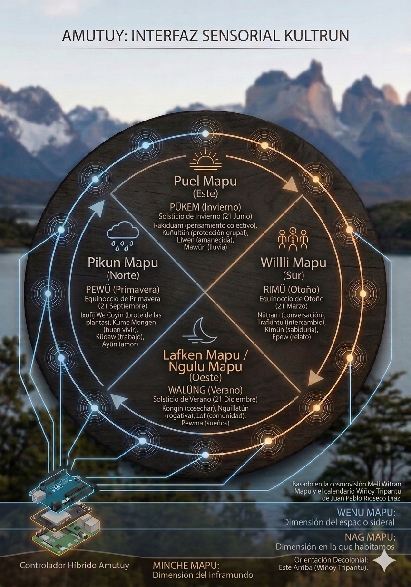
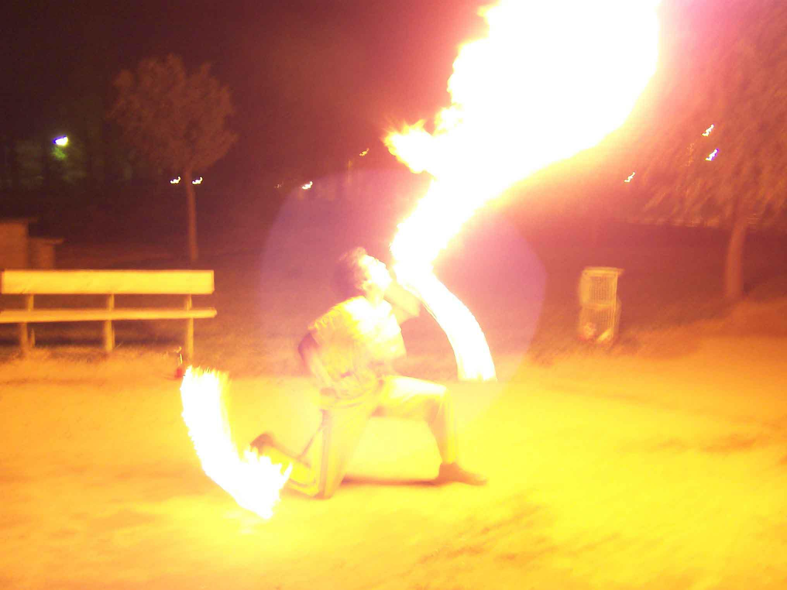
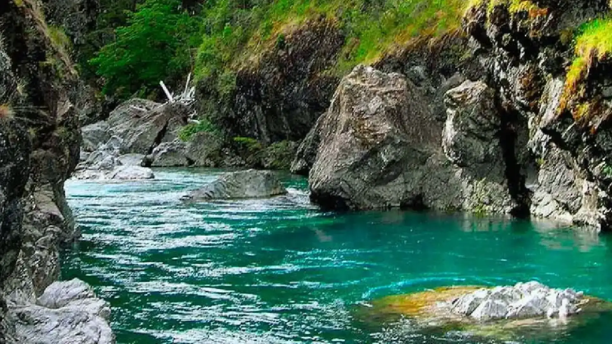

Arte Inmersivo
AMUTUY
Memoria viva del bosque interior

AMUTUY —en mapuzungun, "vamos juntos, partamos, emprendamos el camino"— es una invitación a abandonar la posición de espectador para habitar la memoria del bosque y la cosmovisión mapuche. No se observa: se es parte.
Sobre la obra
AMUTUY es una obra de arte inmersiva multicanal que articula paisajes sonoros del bosque patagónico, performances rituales mapuche, video 360° y audio binaural en una experiencia sensorial no lineal. La pieza propone un desplazamiento radical: el público deja de mirar para habitar un espacio donde territorio, memoria y cosmovisión se entretejen como capas de sentido vivo.
La obra nace de un proceso de escucha profunda del territorio, en diálogo con las comunidades originarias. No se trata de representar una cultura, sino de crear las condiciones para un encuentro sensorial con formas de habitar el mundo que la modernidad ha invisibilizado. El bosque nativo —lenga, coihue, ciprés— no es escenografía: es protagonista, archivo y voz.

Componentes
Capas de la experiencia
AMUTUY se estructura como un sistema de capas que se superponen, dialogan y se transforman con cada recorrido.
Paisajes sonoros
Registros de campo del bosque patagónico capturados durante meses: viento entre las lengas, el arroyo, el canto del chucao, la lluvia sobre el follaje. Composición electroacústica que construye un ecosistema audible.
Performance ritual
Acciones performáticas inspiradas en prácticas ceremoniales mapuche —nguillatun, rogativa, canto— integradas como capas de memoria encarnada. El cuerpo como archivo vivo de saberes ancestrales.
Video 360°
Registro inmersivo del bosque nativo, los ríos y los espacios ceremoniales. El espectador habita el paisaje desde adentro, sin marcos ni encuadres fijos. El ojo elige su recorrido.
Audio binaural
Sonido espacializado en 3D que envuelve al espectador y construye una experiencia tridimensional del territorio. Cada dirección tiene su propia voz: el río a la izquierda, el viento arriba, la tierra abajo.
Narrativa no lineal
No hay principio ni fin predeterminado. La experiencia se despliega como un territorio que se recorre: cada visita es única, cada camino revela algo distinto. El tiempo circular de la cosmovisión mapuche guía la estructura.
Territorio como origen
El Bolsón, Patagonia Argentina: 42° latitud sur. El lugar no es locación sino materia prima, archivo sonoro y visual, y destino final de la obra. Todo nace del territorio y vuelve a él.
Marco conceptual
Arte, territorio y decolonialidad
Memoria encarnada
Diana Taylor, Rebecca Schneider
AMUTUY trabaja con la noción de que hay saberes que no se archivan en documentos sino en cuerpos, gestos, cantos y rituales. La performance no ilustra: transmite conocimiento que solo existe en acto.
Cosmovisión mapuche
Wallmapu — el territorio como ser vivo
El bosque no es recurso ni paisaje: es ente vivo con agencia propia. La obra se sitúa en esta comprensión del mundo para proponer una experiencia que no extrae sino que escucha, no exhibe sino que habita.
Inmersividad crítica
Más allá del espectáculo
La tecnología inmersiva (360°, binaural, XR) no se usa como efecto sino como dispositivo ético: crear las condiciones para que el espectador se desplace de su lugar habitual y se abra a otras formas de percibir.
Decolonialidad
Mignolo, Quijano, Rivera Cusicanqui
La obra cuestiona la lógica extractivista que opera también en el arte: ir al territorio, "capturar" imágenes y sonidos, exhibirlos en el circuito global. AMUTUY propone una inversión: el territorio habla, el espectador escucha.

AMUTUY no es una obra sobre el pueblo mapuche. Es una obra con el territorio y desde la escucha. El bosque habla; nosotros, por una vez, callamos.